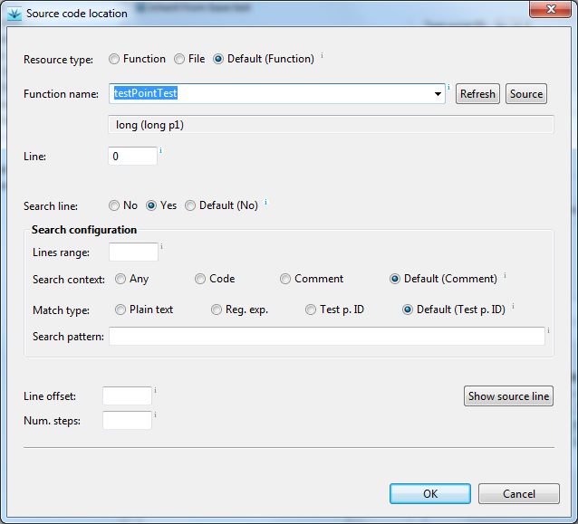
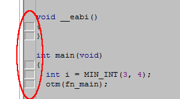
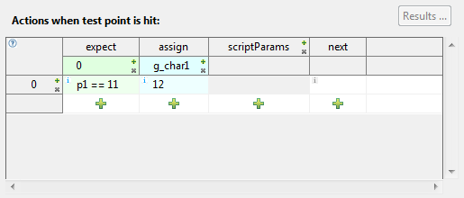

TID:
<testPointID>, for example:i = 10; // TID:
myTestPointi = 10; /* // TID:
myTestPoint */
The Source code location dialog
should then look like shown below:



Indices of action lines are zero based and are shown in the leftmost column in the table.